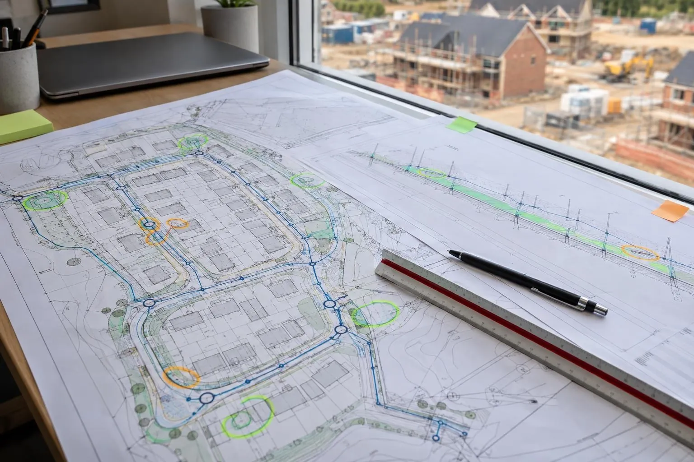

Cost guide
Groundworks design audit cost
What a Dimensure Design Audit costs, what changes the price, and how to think about it against the cost of an error found on site.

Guide price: a groundworks design audit costs from £495 per site, with a fixed price agreed before we start. The report includes a graded issue log, suggested fixes and indicative costs to put each issue right. Prices are before VAT.
Before VAT. Your quote is fixed once we've seen the drawing list.
What changes the price
Size of the site
More plots means more levels, more drainage runs and more places for drawings to disagree.
Size and state of the package
A coordinated set of drawings at one revision is quicker to review than a package spread across several revisions and consultants, where most of the problems tend to hide.
Adoptable works
Roads and sewers built for adoption add long sections, manhole schedules and extra detail to check.
Against the cost of one error
Commissioning an engineer to review a full drawing package usually costs well into the thousands; published UK engineer rates for design review typically run from around £75 to £200 an hour. A single groundworks error found on site can cost far more than that, once breaking out, re-laying, redesign, delay and the dispute over who pays are added up.
The audit is priced so that catching one problem pays for it.
Engineer rates from PAD Magazine's 2026 UK price guide, checked October 2026.
Included in every audit
- Every drawing checked on its own and against the others
- Graded issue log with drawing references
- Suggested fix for each issue
- Indicative cost to put each issue right
- Walk-through of the findings with your team
What we check and why: Dimensure Design Audit. All services: price guide.
Design audits across the area
Questions we get asked
How much does a groundworks design audit cost?
From £495 per site. The final price depends on the size of the site and the drawing package, and every audit gets a fixed price before we start.
Is re-checking revised drawings included?
A follow-up check that the issues we raised have been closed out on revised drawings is quoted separately, so you only pay for it if you need it.
Are the indicative fix costs included?
Yes. Every issue in the log comes with a suggested fix and an indicative cost to put it right. They are estimates to help you prioritise, not quotes.
Is it worth it on a small site?
On small sites one levels or drainage error can wipe out the margin, so a review from £495 is usually a small price against the risk. On large sites a single caught error typically covers the audit many times over.
Book a scan or ask a question
Send the drawing, the location and when you need it. We reply the same working day with a fixed price.